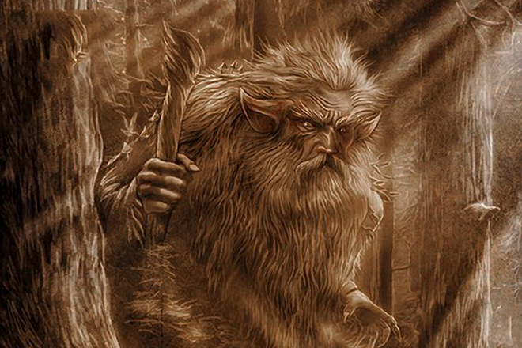

Регистрация
|
Вход
|
Забыли пароль
Главная
Мифологические существа народов мира
Славянские мифические существа
Мифические существа древней греции
Мифические существа скандинавии
Английские мифические существа
Мифические существа Японии
Мифические существа Южной Америки
Мифические существа Африки
Мифологические существа разного времени
Современные мифические существа
Древние мифические существа
Форум
Беседка
Флудилка
Ваши истории
О нас
Баба Яга
персонаж славянской мифологии и фольклора (особенно волшебной сказки) славянских народов. Уродливая старуха, владеющая волшебными предметами и наделённая магической силой. В ряде сказок уподобляется ведьме, колдунье. Чаще всего — отрицательный персонаж, но иногда выступает в качестве помощницы героя. Помимо русских встречается в словацких и чешских сказках. Кроме того, является обрядовым святочным персонажем в бывших славянских землях Каринтии в Австрии, масленичным персонажем в Черногории и ночным духом в Сербии, Хорватии и Болгарии.
подробнее...

Леший
дух-хозяин леса в мифологии восточных славян. Леший был одним из самых популярных славянских мифологических персонажей и, учитывая современный упадок мифологической традиции, сохраняет относительную популярность и сейчас. Традиционный образ лешего сложен, многогранен и расплывчат.
подробнее...
Упырь
общеславянский мифологический персонаж, заложный покойник, встающий по ночам из могилы; он вредит людям и скоту, пьёт их кровь, наносит ущерб хозяйству.
подробнее...
Баба Яга
Подробнее
Леший
Подробнее
Упырь
Подробнее